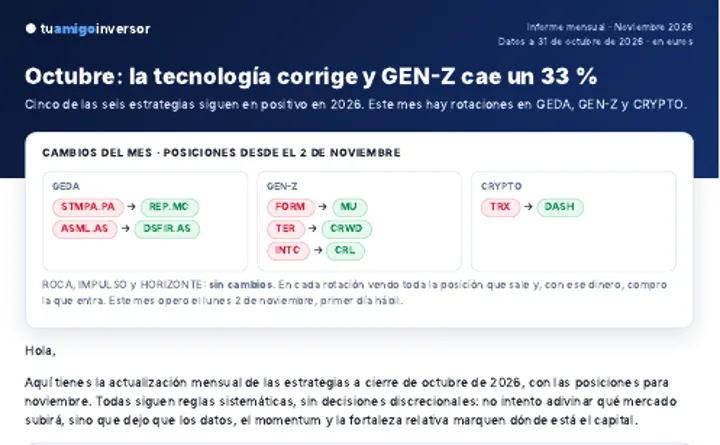

Informes publicados

Así es lo que llega al correo
Los informes ya enviados, tal cual salieron. Sirven para ver el formato y para comprobar que lo que cuenta el registro se dijo en su día.

Informe de noviembre de 2026
Enviado el día 1. Posiciones de noviembre y resultados hasta el mes anterior.
Informe de octubre de 2026
Enviado el día 1. Posiciones de octubre y resultados hasta el mes anterior.
Informe de septiembre de 2026
Enviado el día 1. Posiciones de septiembre y resultados hasta el mes anterior.


El de cada mes llega a los suscriptores el día 1; aquí lo subo a mediados de mes.
GRATIS
Recibe el informe el día 1
Un correo al mes con qué tengo en cada una de las seis estrategias, qué cambio y cómo fue el mes anterior. Lo lees y decides tú.
- Es gratis. Solo tu nombre y tu correo, sin tarjeta.
- Un correo al mes, el día 1. Sin ofertas ni cursos.
- Baja con un clic desde cualquier correo.
- Primero en tu correo: la cartera llega el día 1; la web la recoge a mediados de mes, entre el 10 y el 15.
Antes de apuntarte puedes ver los informes ya enviados.
Al suscribirte aceptas la política de privacidad. El formulario lo gestiona Brevo.